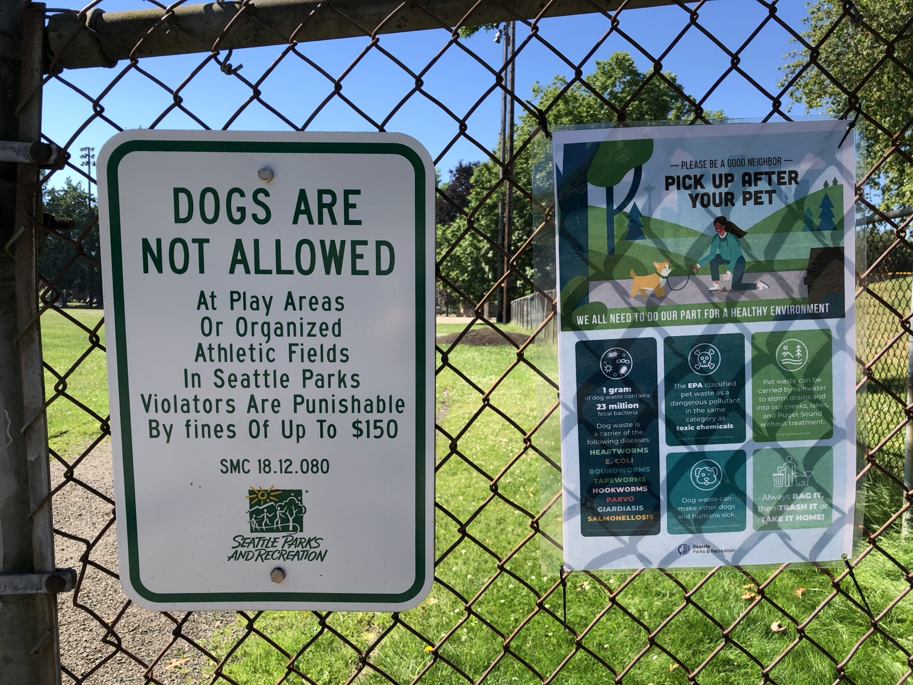

An honest take on what the data on this site shows, and what I think the city should do about it. This is the opinion page — everything else on this site is factual reference.

I'll be upfront — I own dogs, I walk them in Seattle's parks, and I have a strong opinion about how the city has managed off-leash access. The rest of this site is deliberately neutral. This page isn't. What follows is six principles I think most reasonable Seattle residents can get behind, three opinions that fall out of the data this site has gathered, seven counterarguments I've tried to take seriously, and a recommendation I've been sharing with the city, council candidates, and SPR since 2014.
One thing first, because it gets lost in advocacy writing on this topic — this is a hard problem. There's no clean answer that leaves everyone satisfied.
Park space in a dense, land-scarce city is finite, and the people asking for more of it all have legitimate claims — dog owners, soccer leagues, community gardeners, neighbors who want a quiet lawn to read on, kids who want a playground, unhoused residents who need somewhere to exist, runners, cyclists, birders. Every one of them can point to data saying they're under-served. Several of them are right at the same time. (Veterinary behaviorists also make a separate case that traditional dog parks aren't ideal for many dogs — but that's a conversation about design and education, not policy.)
I genuinely have empathy for the council members, mayors, and SPR staff who've taken a run at this over the last two decades. They've held listening sessions, commissioned studies, drafted plans, opened a dog park or two, absorbed the complaints from everyone who didn't get what they wanted, and moved on to the next file on a desk that's never empty. Sit down with this in good faith and you run into the same walls every time — land, money, competing uses, neighborhood opposition. Anyone who engages with it seriously figures out pretty quickly why the easy answers aren't easy.
Not everyone leaves happy. Any real change here upsets someone. A policy that gives dogs more access feels like a loss to people who'd rather be in parks without them. A policy that protects the status quo leaves 150,000+ dogs and their owners exactly where the rest of this site documents. There's no version of this where nobody's disappointed.
So I'm not writing this to claim I have the perfect answer, or to suggest the people who've tried before were foolish for not finding it. I don't, and they weren't. What I am saying is that after twenty years of running the same playbook — study, listen, build one park, repeat — the data on this site shows the approach isn't closing the gap. It isn't even keeping pace. At some point, continuing to run a strategy that measurably isn't working becomes its own choice.
That's why this page is here. Not to argue the answer is obvious (it isn't), but to argue that trying something different is overdue. The specific alternative I think is worth a real look is a time-zoned shared-use model, borrowed from cities that have run it for decades. The sections below lay out what I think the data supports, and what I'd like the city to consider.
These aren't numbers — they're values plus factual observations. I think most reasonable Seattle residents, dog owners and non-owners alike, can sign on to them.
Zero net dog parks added since 2009 — seventeen years and counting — while the population grew 34%. Two more open in fall 2026. Even if SPR eventually builds every site on its current list, the per-capita gap to Portland, San Francisco, and Vancouver BC doesn't close. Seattle is physically constrained: dense, land-scarce, expensive parcels, already-extensive parks to maintain.
Seattle's in the middle of a long housing-affordability crisis and an ongoing homelessness emergency. When a rare parcel of city land comes loose, the case for housing, shelter, or services is stronger than the case for a new fenced dog park. I own dogs and I still believe this. Any serious plan to improve off-leash access has to start from the assumption that we're not getting more than a handful of small new OLAs over the coming decade.
The obvious part first — yes, kids should be prioritized over dogs. Most reasonable people agree. A city with 157 playgrounds and 14 dog parks is making a choice about who its parks are for, and on the first axis — kids first — that choice is right. I'm not arguing for a 1:1 split.
What I am arguing is that the magnitude of the gap has gone past any reasonable prioritization. Widely cited estimates put Seattle's dog population at around 150,000 as a floor, and SPR's own 2023 Expansion Study cites figures up to 400,000. Seattle's under-18 population is roughly 115,000. Even at the conservative floor, dogs outnumber kids — and SPR runs 157 playgrounds against 14 fenced OLAs. The dedicated OLA budget line in 2018 was about $100,000 out of a $168M SPR total: roughly 0.06%. On the land side, OLAs occupy about 31 of Seattle's ~53,100 acres — again roughly 0.06% of the city, about one-sixteenth of one percent. Prioritizing kids is right. Arriving at 0.06% for a population the size of all dog owners is how we got here. That's what this principle says should be fixed.
Non-negotiable. Every dog owner I respect accepts this. Kids who are afraid of dogs, adults who don't want a strange dog in their face, picnickers, joggers, runners, people using the park for a dozen other reasons — none of them signed up to share space with an unfamiliar off-leash dog. The current setup, where ~40% of dog owners self-report monthly-or-more illegal off-leash use, fails these residents directly. Whatever fix comes next has to protect their use of parks at least as well as the current system pretends to.
A playfield with dog feces on it, or a baseball diamond where someone's loose dog just ran through left field, is a system failure on every axis. This isn't a dog-vs-kid argument — both groups deserve protected recreational space. The current policy doesn't actually deliver clean playfields; enforcement happens at the margins, after the fact, with no cleanup component.
Access goes both ways. Right now, dog owners have a few tiny, often-unsafe OLAs; non-owners have a city full of parks that are technically dog-free but in practice aren't. Both groups lose. A well-designed policy protects time windows for each use.
In 2014 the Seattle City Council asked SPR to rethink off-leash policy. SPR spent over a year running surveys and in-person interviews with dog owners, parents, COLA, and neighborhood groups. The consistent feedback was that the pre-2014 policy was unworkable, enforcement was structurally insufficient, and other cities had already tried shared-use or time-zoned models worth studying. The resulting People, Dogs and Parks Strategic Plan kept the same framework, added two full-time animal-control officers, and declined to pilot any shared-use approach. Seattle Magazine covered it at the time. In the years since, the OLA count hasn't meaningfully moved, and illegal off-leash use has if anything grown with the dog population.
And yet in April 2026, Axios Seattle reported that SPR and the Seattle Animal Shelter are expanding enforcement again — moving from one officer Wednesday through Saturday to two full-time seven-day positions plus backup, on top of roughly 26 park rangers patrolling more than 460 parks. SPR's framing: "it's not a crackdown, officials say — but more boots on the ground are coming." That's the same lever, pulled harder. The enforcement data already shows what this lever produces at scale — 4,803 citations over six years, about 90% of them first-offense warnings at $0 or $54, against at least 150,000 dogs. Adding a second officer and a weekend tour doesn't change the underlying math of a ~0.5% annual enforcement probability per dog.
It does, however, cost real money — and now we know roughly how much. The 2021 signed MOA between SPR and the Seattle Animal Shelter (AG21-PRF03-032) lays it out in Attachment A — one Animal Control Officer II is billed to SPR at $43.07/hr plus 45% benefits overhead = $62.45/hr × 2,088 hours = $130,399/year in personnel, plus $3,000 in supplies and $19,000 in divisional overhead, for $152,399/year. That's the FAS-side cost only. The SPR-side Facilities Maintenance Worker who patrols with the ACO as a paired team sits on SPR's books separately. They're paired half-time with each other, four days a week — roughly 160 officer-hours per month to cover 485+ parks and 6,414 acres.
Scaling those 2021 numbers forward for wage growth and the April 2026 expansion (from 1 ACO II Wed–Sat to 2 ACO II seven-day plus backup), the combined program — ACO + FMW paired teams, vehicles, supplies, overhead — lands plausibly in the $700K to $1M per year range. (Step-by-step math in sources/aco-moa-2016.md.) That's real money aimed at a lever the site's own enforcement analysis shows produces a 0.5% annual contact probability per dog and mostly-warning outcomes. Redirect the same half-million-to-million dollars to a clean-park compliance model — time-zoned shared use plus post-session cleanup staff, per the recommendation below — and you'd fund a far larger ground presence at the moments parks actually need it. This is what the 2014–2017 process warned against, and the cost just makes the misdirection easier to see.
The numbers: 4,803 off-leash citations between January 2014 and October 2019, against a dog population of at least 150,000. At the city-wide average, that's roughly a 0.5% chance per dog per year of being cited. Treat that as a rough SWAG, not a statistic — it averages over huge variation. Owners who never off-leash have zero exposure. Owners who visit high-citation parks a few times a week face probabilities several times higher. Owners in neighborhoods where rangers don't patrol face close to zero. The city-wide rate is useful as a floor for the argument (even at the most heavily-patrolled parks the per-visit probability is small, and Seattle's enforcement capacity can't close that gap without orders-of-magnitude more staff), but it isn't a per-owner risk calculation. What the data does support: about 90% of the 4,803 citations were first-offense warnings at $0 or $54. Second offense is $109, third is $136, fourth-plus is $162. The practical ceiling is about $162, and even the Seattle Municipal Code's $150 maximum gets absorbed by higher-income owners as a de-facto access fee. Raise fines higher and you hit a regressive-enforcement problem — the same $500 fine that's meaningful to a lower-income owner is a rounding error to a wealthy one. The fine-based model is structurally mismatched to the behavior. SMC 18.12.080(A) is the cited violation.
People break the law here because the legal option is often worse:
It's a supply failure producing a compliance failure, exactly what basic economics would predict. No amount of enforcement addresses the underlying cause.
Before I get to the recommendation, let me say out loud the best arguments against it. These are pulled from a 147-comment April 2021 Nextdoor thread about Queen Anne Playfield where neighbors on both sides engaged substantively. Every argument below was made by a real neighbor, not a strawman. Where the counterargument is correct, I say so.
This is correct. SMC 18.12.080 is unambiguous, SPR signage is unambiguous, and athletic playfields are dedicated to organized play. When dog owners off-leash on a marked playfield during softball practice, they're breaking the law and interfering with the park's intended use. My argument here isn't that individual rule-breaking is justified — it's that the rule has failed at the system level, and the system needs policy change, not more individual rule-breaking. The recommendation on this page is addressed to the city, not a defense of what people already do.
Agreed in the narrow sense — and I think it's the wrong frame for a policy question. Dog ownership is discretionary. It's also mainstream — SPR's own 2016 survey found roughly 25% of Seattle residents use OLAs, and Seattle's dog population is plausibly larger than its under-18 population. When a city allocates 0.06% of its parks budget to a constituency that size, the question isn't whether dog ownership is a "right." It's whether the allocation matches the constituency. It doesn't. That's the policy argument, not a rights claim.
Confirmed — multiple times, by non-advocates, at the same park. In the thread referenced above, one neighbor documented a small off-leash dog running at an 8-year-old's feet at Big Howe. Another described a flag football game at Queen Anne Playfield being paused several times because a single off-leash dog kept running into play. A softball parent described her daughter's practice where "every practice the girls are stepping in dog poop." These are real, and honestly they strengthen the case for a structured shared-use model rather than weaken it. The current setup produces these incidents despite the law, because enforcement is structurally insufficient. A time-zoned model with dedicated cleanup staff (the recommendation below) directly addresses each of these by reserving prime athletic hours for athletic use and pairing the off-leash window with visible compliance staff.
Correct, and the site doesn't argue otherwise — I want to say that explicitly. "More dogs than children" is a scale indicator showing dog ownership is mainstream in Seattle. It's not a prescription that dog-park spending should match playground spending per capita. What I'm arguing is narrower: SPR's 0.06% allocation for a population that's 25%+ of residents is an order-of-magnitude mismatch with any reasonable allocation principle. Not that 25% of the parks budget should go to OLAs.
Yes, and yes. This appears in both the thread and in Principle P2. Don Harper, the Queen Anne Community Council Parks Chair, has spent 20+ years on this problem — and described several attempted sites (MacLean Park, David Rogers Park, Smith Cove) that were rejected by SPR, by adjacent neighbors, or by funding-source restrictions. That's exactly why my recommendation isn't "build a lot more OLAs." It's a time-zoned shared-use policy on parks the city already owns.
The first sentence is completely fair. A parent watching softball practice at Queen Anne Playfield didn't personally set SPR's OLA allocation. Taking frustration out on them is both wrong and counterproductive. My argument here is only with the city — which is also the body that can change the policy. The second sentence is the interesting one: "Don't break the law, lobby for change." I'd argue they're not mutually exclusive. People have lobbied. COLA has lobbied. The QACC Parks Chair has spent two decades lobbying. The city's answer has been to expand enforcement of a failing law rather than reexamine it. At some point "lobby harder" stops being a serious response.
Fair and concrete. If the city can't enforce "no dogs ever on athletic fields," why would it enforce "no dogs on athletic fields from 9 AM to 9 PM"? Two answers. First, the shape of the rule is different — a time-bounded window is something an owner can plan around, which the current blanket rule isn't. Second, the recommendation specifically redirects the enforcement budget away from citations and toward on-site compliance monitoring at the transition hours and post-session cleanup. You can't enforce every park every minute of every day. You can enforce a handful of designated parks at two specific transition points per day. That's tractable, and it's what New York has done for 20+ years. It's not a new idea. What's new, apparently, is Seattle trying it.
SPR's 2017 People, Dogs and Parks Strategic Plan defends current OLA coverage with an access claim that, once you look at it, is the clearest evidence of the framework's failure: most Seattle residents live within 2.5 miles of an OLA. The Green Lake loop is 2.8 miles. SPR is effectively arguing that walking the Green Lake loop one-way to reach your dog park — and then walking it back — counts as reasonable access.
For comparison, Trust for Public Land's industry-standard metric — the same one SPR happily cites when noting that 99% of Seattleites live within a 10-minute walk of a park — is 0.5 miles. NRPA, the Urban Land Institute, the National Park Service, and the CDC all use the same 10-minute walk standard for parks. There's no universal national consensus like that for dog parks specifically. A handful of agencies have tried OLA-specific service radii — Seattle's own 2016 Recreation Demand Study used 2.5 miles, Fairfax County has a published dog-park siting study — but nothing like TPL's 10-min benchmark has caught on for OLAs. When a city needs an access metric for OLAs, the industry default is the same 10-minute walk it uses for any other park. SPR uses the tighter standard when it's celebrating Seattle's park system in general, and a standard 5× more permissive to paper over the OLA-specific failure. That asymmetry alone is the argument.
Given the principles and the evidence, the realistic path forward isn't to keep building small fenced OLAs. It's to change the policy about how dogs and people share the parks Seattle already has.
Before I recommend it, this deserves a direct answer. The New York City Department of Parks & Recreation formally codified the Off-Leash Hours policy on April 10, 2007, after running it as an informal "courtesy hours" arrangement since roughly 1986. Nineteen years of formal operation, nearly forty if you include the informal period. The policy is simple — in designated areas of participating parks, licensed and vaccinated dogs may be off-leash from park-opening until 9:00 AM and from 9:00 PM until park-close. Outside those windows, normal leash rules apply (NYC Parks — Dog-Friendly Areas). The policy runs in parallel with NYC's dedicated fenced dog runs, not in place of them.
Scale. Off-leash hours are designated at a large share of NYC's ~1,700 parks. The city doesn't publish a consolidated count, but public advocate and Parks Department inventories list eligible areas across all five boroughs (NYC Council public-advocate directory). Designated areas include sections of Central Park, Prospect Park, Riverside, Van Cortlandt, Forest Park, and dozens of neighborhood parks. By any counting methodology, NYC's off-leash footprint dwarfs Seattle's 14 fenced OLAs.
The honest caveat. NYC doesn't publish a longitudinal evaluation of the policy's outcomes — no official "is it working?" report with citation counts, complaint trends, or injury rates. The longevity is the proxy. Nineteen years of formal operation, renewed through multiple administrations with different political postures on parks, and no reversal. NRPA covered the model in its November 2018 Parks & Recreation law review ("Courtesy Hours for Off-Leash Dogs in Public Parks") and treats it as the mature US example other cities look to. Boston has similar time-based variations. Chicago runs a parallel DFA (Designated Free Area) system. What's missing from the public record is the kind of quantitative outcomes tracking I'm arguing Seattle should do from day one (Recommendation point 7). If Seattle piloted this, Seattle's evaluation could become the analysis NYC's history doesn't offer.
What this doesn't prove. It doesn't prove the policy transfers cleanly to Seattle. NYC has higher density, different topography, different rainfall, different enforcement institutions, and a very different relationship between parks and homelessness response. What it does prove is that a city of 8 million has run a time-zoned shared-use off-leash policy for nearly twenty years without catastrophic failure or reversal — which is a higher bar than anything Seattle's current OLA framework has cleared.
Adopt a shared-use model similar to New York City's long-standing off-leash hours policy — early morning and evening windows in designated parks during which dogs may be off-leash under owner control, with the rest of the day reserved for traditional park use. Pair it with a different enforcement posture focused on shared-use compliance, not leash-law violations.
This approach was raised during the 2014–2017 SPR process, was supported by COLA and multiple participating community members, and was set aside as too hard to enforce. The data this site has assembled suggests the current approach is also too hard to enforce — 4,803 citations over six years against 150,000+ dogs. If we're going to have a policy that's difficult to enforce either way, we should pick the one that could actually work if we did.
This page argues that Seattle has failed at the OLA question. It hasn't failed because nobody tried. A lot of people have spent years — some of them decades — working on this, inside and outside city government, and been stymied by constraints no individual advocate can solve on their own. A few of them, by name.
Two-plus decades of organized volunteer advocacy on Queen Anne parks, including the hilltop OLA question. QACC's Parks Committee has kept "locate and build an off-leash area on top of Queen Anne" as a standing priority for years, alongside ongoing work on West Queen Anne Playfield, Smith Cove Park, Queen Anne Boulevard, and park cleanup from illegal encampment damage. Board members rotate; the committee doesn't. Current QACC leadership includes chair Beth Bunnell, vice-chairs Nicole Friedman and Laurie Jordan, and board member Don Harper, who chairs the Parks Committee and has been the most visible single voice on the Queen Anne OLA question. QACC secured 2008 Pro Parks & Green Spaces Levy funding that ultimately produced Kinnear and Magnolia Manor OLAs; participated in the Smith Cove design process (originally 55,000 sq ft, reduced by SPR to 25,000 sq ft three months later); and has attempted sites at MacLean Park (blocked by funding-source restrictions) and David Rogers Park (blocked by neighborhood pushback). Still at it. See also the 2021 neighborhood thread summarized in sources/nextdoor-qa-playfield-2021.md.
The 501(c)(3) that has organized volunteer advocates, maintained biennial OLA surveys and inventory data, and participated in every major SPR planning process since well before the 2014 People, Dogs and Parks Strategic Plan. The usability data on Part II (lighting, water, small-dog areas, residents' regularly-used sites) is COLA's work. Every advocate who comes to this issue fresh builds on theirs.
Twenty-plus years of volunteer stewardship that made Magnuson the functional model of what a neighborhood-governed OLA can be: programming, fundraising, infrastructure upkeep, community coordination. Magnuson is the counterexample to "Seattle can't do OLAs well" — it's what happens when a community owns the outcome. The recommendation on this page borrows explicitly from the MOLG model on the community-governance side.
This page is critical of SPR's policy choices, and it should be read alongside the acknowledgment that SPR has been asked to do a genuinely impossible job. Seattle is one of the densest, most land-constrained major US cities. Park parcels big enough for a real OLA cost tens of millions of dollars, when they can be found at all. SPR has to balance the needs of kids, athletic-league users, non-dog park users, dog owners, wildlife, environmental remediation, and a housing-and-homelessness emergency that puts pressure on every square foot of public land — all at once. The 2014–2017 People, Dogs and Parks process was sincere and the staff who ran it worked hard. My criticism is narrower: the resulting plan repeated the pre-2014 framework rather than piloting a shared-use alternative. And now, a decade later, it's being repeated again with expanded enforcement. That's factual, not accusatory. The same approach has failed twice, and SPR is the right partner to run the pilot that tries something else.
Then-candidate and later Councilmember Andrew Lewis (District 7, 2019–2023) was the most visible elected voice on this issue during his time in office. Other council members have moved seats since 2019 but multiple offices have received data packets from community advocates. If you're a current council member or staffer, see the public records request (PRR) and outreach directory — these are the questions we're asking SPR and what we're asking to see the answers to.
Every dog owner who has driven out of their way to reach a real OLA rather than off-leashing at the neighborhood playfield. Every parent who has kept bringing their kid to that playfield anyway. Every softball coach still running practice on a field that sometimes has dog feces on it. The status quo is a tax everyone pays, and it doesn't have to stay that way.
This page is opinion. The principles, opinions, and recommendation above are mine. The data claims underneath them link back to the factual pages on this site, to public records, or to published primary sources.
Relationship to the 2014–2017 SPR process. I participated in the People, Dogs and Parks Strategic Plan live interviews as a community member. I'm not and have never been an SPR employee, a COLA board member, or an elected official. My views are personal.
On the "more dogs than children" figure. The 150,000-dog floor used throughout this site is conservative. Part I's methodology note walks through three independent estimates — a Seattle Open Data licensed floor (~26,700 active licenses), an AVMA-derived demographic estimate (~248,900), and the SPR 2023 Expansion Study range (187K–400K). All three bracket the same order of magnitude. The 150K floor sits below all of them by design.